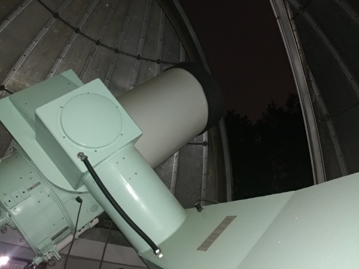
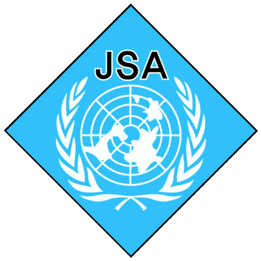

Profile
 Donghyeon Jeff Khim (Kim) [김동현]
Donghyeon Jeff Khim (Kim) [김동현]
I am a graduate student in the Department of Astronomy at Yonsei University.
Research Interests
- Kinematic Misalignment between Stars and Gas
- The Evolution of Properties of Simulated Galaxies
- Comparison of Simulations and Observations
Office: 611, Science Building, Yonsei University
Email: galaxydiver at yonsei dot ac dot kr
Educations
Yonsei (Master's Course)
2018.03 - present
Supervisor: Prof. Sukyoung K. Yi
Thesis title: "On the origin of star-gas misalignment"
Yonsei (Undergraduate)
2011.03 - 2018.02
Degree: Bachelor of Science, Bachelor of Science
Major: Astronomy, Physics
Awarded High Honors at Graduation - Magna Cum Laude
Scholarships & Fellowships
Yonsei (Master's Course)
Yonsei Honor’s Scholarship Program - Graduate Course (A three-year full-tuition)
Brain Korea 21 Plus Fellowship, Brain Korea 21 Project
Yonsei (Undergraduate)
Yonsei Honor’s Scholarship Program (A four-year full-tuition)
Republic of Korea President's Science Scholarship Program (A four-year full-tuition)
Awards
Yonsei (Graduate)
2020 Fall Yonsei Merit Academic Paper award
2019 Korea Astronomy Society Spring Meeting, Poster award (Khim & Yi)
2019 The 2nd Yonsei Astro Poster Jamboree, The best poster award
Yonsei (Undergraduate)
Awarded High Honors at Graduation
- Magna Cum Laude
Awarded the Highest Honors (Spring 2011, Fall 2014, Fall 2018)
Awarded High Honors (Fall 2012)
Awarded Honors (Spring 2012, Spring 2014, Spring 2017)
Korea Science Academy (high school)
The 3rd International Olympiad on Astronomy and Astrophysics (IOAA), Silver Medal. IOAA
Activities
Skin-Scuba Diving
- "Yonsei Skin-Scuba Diving Team"
- Served as a club president - 250+ Scuba dive logs
- NAUI Master Scuba Diver (Certified in 2013)
- PADI Enriched Air Diver (Certified in 2019)

Would You Like
- "Would You Like"
- Founding member
- Served as the chief editor - Magazine aiming to popularize astronomy
- Writing and design of articles and nationwide distribution were performed
- Double expression, the pronunciation is the same as the ‘Universe’ in Korean
- Webpage (Korean)

1st GeCAA (2020)
- Participated in the 1st Global e-Competition on Astronomy and Astrophysics (GeCAA)
- Korea international team mentor. - GeCAA | Certificate

Yonsei Telescope Operating System (2011-2014)
- 
- Development of the telescope operating system in Yonsei University
- Yonsei Ilsan Observatory 61cm main telescope
Military Service (2014-2016)
- 
- UNCSB-JSA
- United Nations Command Security Battalion – Joint Security Area, Panmunjom
- UNCSB (website) | JSA (wikipedia)
- Honorably discharged as Sergeant, Surveillance Squad Leader
- 2016 JSA Battalion Commendation (Contribution to the report "The Analysis of North Korean Army’s Infiltration Tactics – JSA")
- Certificate of Commendation (ROK Army Intelligence School)
- Certificate of Appreciation - Jul 2016